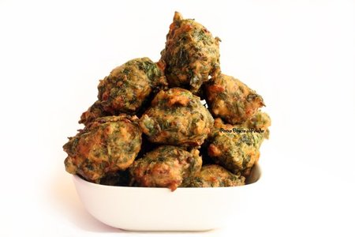

Prepara una buena entrada
Hola a todos y todas, ¡bienvenidos! Hoy vamos a meternos en la cocina para preparar un entrada que nunca falla, buñuelos de acelga. Es uno de esos platos que siempre sorprende y encanta, ideal para arrancar una comida con amigas, como picada antes de una cena familiar o simplemente para darte un gusto casero y delicioso. Así que poné música, lavate las manos y vamos paso a paso a preparar esta delicia que seguro se va a convertir en un clásico en tu mesa.

Ingredientes
Buñuelos
- Espinaca/acelga 1 atado.
- Cebolla 1.
- Huevos 1.
- Leche 100 cc.
- Harina 0000 250 g.
- Polvo de hornear 2 cdtas.
- Queso provolone c/n.
- Nuez moscada c/n.
- Sal y pimienta c/n.
- Aceite para freír c/n.
Lactonesa
- Aceite de oliva 125 ml
- Leche 60 ml
- Diente de ajo1
- Sal y pimienta a gusto
- Ralladura de limón 1 cucharadita
Ahora a preparar
Primera parte - Buñuelos
- Colocar en un bol los huevos, la leche, sal, pimienta y nuez moscada a gusto.Incorporar la harina, de a poco tamizada mientras mezclamos para integrar. Se debe lograr una pasta más bien espesa.
- Agregar la cebolla rehogada y un atado de espinaca picada en crudo y mezclar. Luego agregar el queso provolone.
- Freír en abundante aceite caliente hasta dorar.
- Retirar y escurrir sobre papel absorbente.
Segunda parte - Lactonesa
- Poner la leche a temperatura ambiente en el vaso del mixer y agregar el aceite, la sal, pimienta, y el diente de ajo sin el brote.
- Mixear sin levantar de la mezcla hasta que veamos que la leche se ha emulsionado con el aceite y la mezcla haya espesado.
Importante
Usa bastante cantidad de aceite en una olla profunda. Cuida la temperatura,(180º) probá con uno primero. Se debe cocinar parejo, evita que se queme el aceite, y lo podes reutilizar un par de veces más.
Si necesitas mas ayuda, mira este video y cocina de una manera mas facil!!!